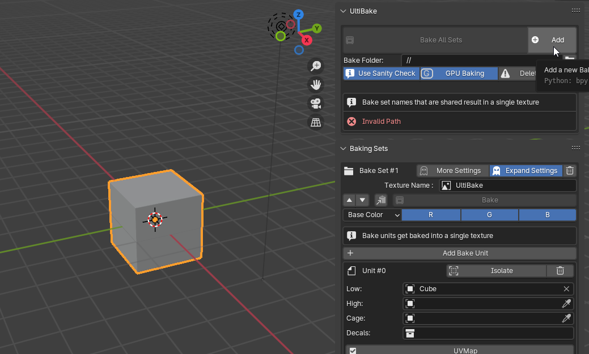

What is this?
Ultibake is a Blender addon that makes baking textures for your 3D models fast and easy. It supports UDIM baking, decal baking, and channel packing. It integrates well with DECALmachine and UVPackmaster3, two extremely useful Addons for Blender. Ultibake uses the best features of Marmoset Toolbag(Baking Sets) and Substance Painter(Decal Baking) to create textures that match your needs and style. Ultibake is the ultimate baking solution for Blender users.
Get it on The Blender Marketplace
Get it on Gumroad
The Basics
When baking for the first time, you might have to wait for a minute as the baker will fetch dependencies on its first bake.
Because we are using "//" as the path, which means a relative path, we need to save the .blend file or it will display an invalid path.
The only thing you need for a bake is to create a bake set from the vertical ribbon on the right in the 3D-viewport, then assign your target object (low) for baking in the bake unit.

All the materials must contain at least a Principled BSDF node as this is used by the baker for the bake types.
The sidebar can get cluttered very fast. It is recommended to utilize different scenes, as the bake types are stored per-scene. You can also disable hints for a more compact UI.
On the upper part of the Ultibake UI, there is a Sanity check toggle. I recommend keeping this on at all times as it will prevent you from baking something that might be invalid. However, since this sanity check is expensive, it can also lag the HUD.

Channel Packing
A very useful technique used to fit extra bakes into an image. In Ultibake, each bake set has an explicit RGB or RGBA selector to the right of the bake type.Bake sets that are similar in name and file format will be combined into a single texture.

There is a difference between the RGB and RGBA selectors, but basically, the RGB selector is asking what to bake from the selected bake type.
Opposed to the RGBA selector, which is asking what channel to bake the type into.

Changelist
1.5.2 - Initial public release
1.5.3 - Hotfix
- Improved Decal machine material support
- Automatic decal subdivision
- Removed edge control(redudant due to decal margin)
- New bakesets are now added to bottom instead of top